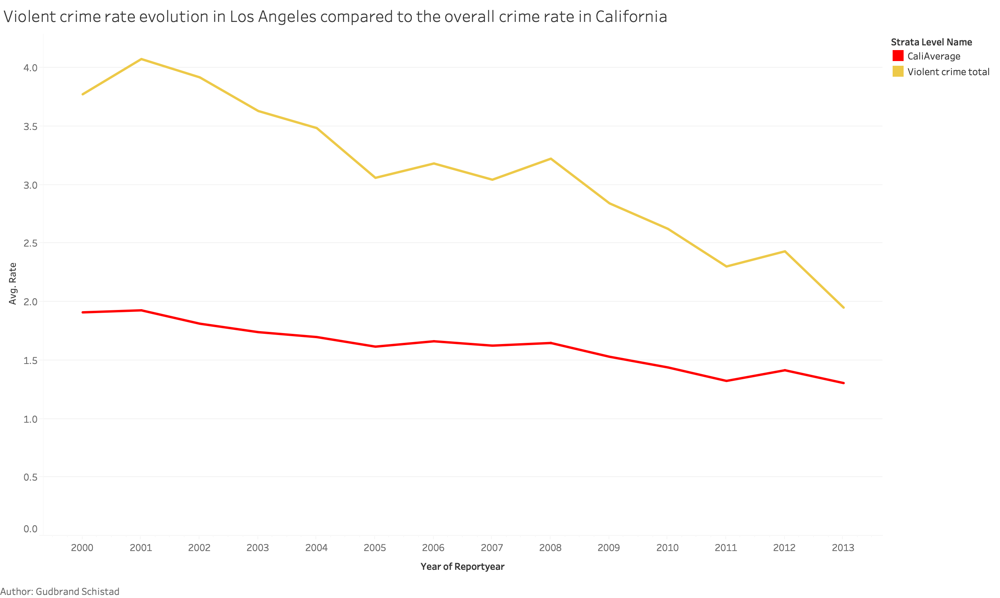
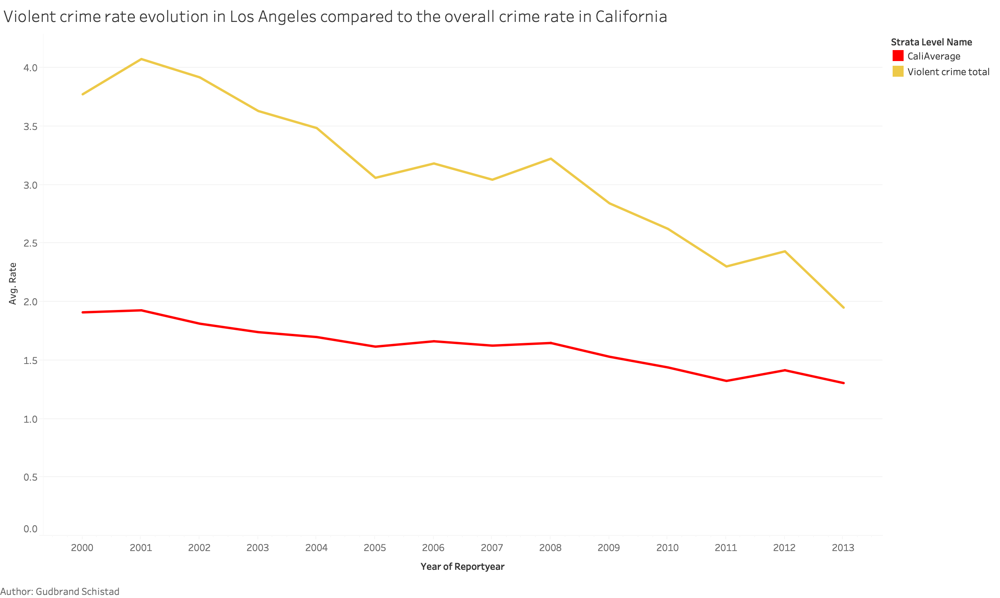

Planed interactivity
- Year selector: Range slider to filter the data by a specific year, this should also include a option to select "All years", which will display the same data as the prototype
- Tooltip: Hover over a specific county to see county data.
- Detailed info: Button to select how much detail that should be display in the tooltip.
- Panning: You can move the map around by clicking and holding the left mouse button while moving the mouse.
- Zooming: Use your scroll wheel to zoom in or out on the map.
Visualization goal
The goal of this visualization is to get a geographic understanding of the violent crimes rates in California. With the help of the interactive features, the reader will be able to see the change in the violent crime rate for specific counties, as well see what types of violent crimes that are the most common in the selected county. Its also important to mention the lie factor in the color scale, since it will be based on the highest violent crime rate of the selected year, so the same color may mean different rate values in different years.
 
